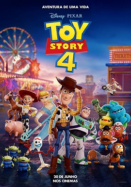

Sobre Mim
Nos dias de hoje eu sou estudante da Etec Profº. Maria Cristina Medeiros, curso o primeiro ano do meu Ensino Médio que consequentemente também é o primeiro ano do meu Curso Técnico de Informática para Internet. Eu vim ao mundo no dia 17 de Agosto de 2005, nasci na cidade de Ribeirão Pires, mas moro em Maua grande ABC no estado de São Paulo. Durante a minha vida até então já estudei na Escola Estadual Walt Disney do 1º ao 5º ano do Ensino Fundamental 1 e fui bolsista no Colégio Elite Opção Mauá do 6º ao 9º ano do Ensino Fundamental 2. Sempre tive o grande sonho de trabalhar na área do jornalismo, mais precisamente focado para a área dos esportes, então meu primeiro plano de faculdade é fazer Jornalismo Esportivo, mas desde que entrei na Etec e comecei a fazer meu curso técnico nasceu um desejo muito grande de ser programador e trabalhar na área da Informática dentro de mim, então também não posso descartar!!
Conhecimentos

Estudante de Desenvolvimento em Web
Tenho um conhecimento intermediário em HTML e CSS, já em JavaScript tenho um conhecimento um bem raso, até o momento só foi citada essa linguagem de programação na matéria de Programação de Algoritmos, onde eu produzi uma calculadora utilizando JavaScript.
Inglês
Eu realizo um curso da Língua Inglesa há 6 anos, tenho um conhecimento na parte grátical bem avançada e o "Speak" também é avançado, realizo esse curso na Communication School e faltam 2 anos para eu finalziar o material didático e finalizar o curso.

Photoshop e Edição de vídeos
Eu possuo um conhecimento intermediário em Photoshop, habilidade desenvolvida nas aulas de Arte Digital. Já na parte de ediçãode videos eu tenho um breve conhecimento, mas esse conehcimento vem por conta da minha curiosidade e com isso eu me aprofundei no assunto e aprendi um pouco assistindo vídeos aula no YouTube.
Meus Hobbies
Eu sou uma pessoa fanática por esportes em geral, basquete, futebol, võlei, mas em especial o futebol, eu o amo de paixão, essa minha paixão pelo fubeol vem de família, meu avô que me ensinou a amar o futebol e especialmente o Corinthians, sei de tudo que você me perguntar, eu vivo futebol, respiro futebol e por esses e mais milhões de motivos tenho o sonho de trablhar na área, " Trabalhe com aquilo que você gosta que você nuna precisará trabalhar!!!" Produzo alguns vídeos informativos sobre futebol no TikTok, acesse-os clicando na imagem abaixo:
Outro hobby meu é assistir qualquer tipo de curta/longa metragem, meus gêneros de filmes favoritos são animação, comédia e ficção científica. Tenho como meus filmes favortitos "Rei Leão" e "Toy Story"
Contato
Veja abaixo alguns meios para entrar em contato comigo!!!!